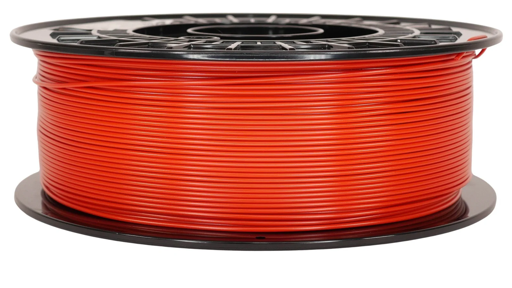
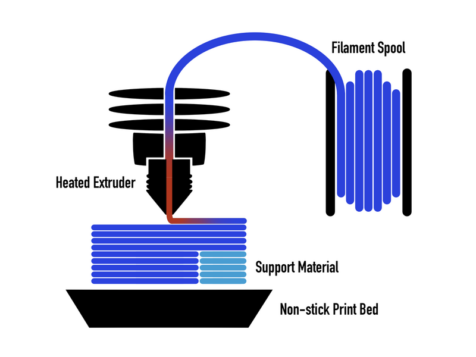
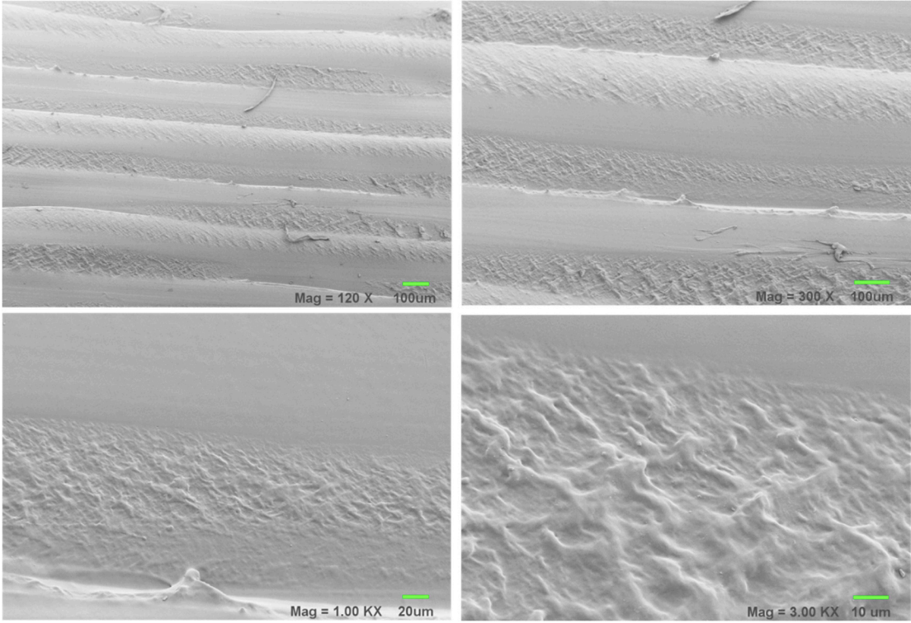

Polylactic Acid (PLA) is a polyester type of plastic, meaning the chain is kept together with ester bonds. It is made up of lactic acid which can be created from fermenting starch or sugar and it can exist in either L or D forms. PLA is more renewable and eco friendly than other oil based plastics.
There are two ways to make PLA, one way is to simply keep linking lactic acid to make long chains and water is produced as a byproduct, which creates lower quality and weaker plastic. You could also make PLA by creating lactide, which is a ring molecule made up of lactic acid, you can then open the ring into the needed chains to create PLA without the water byproduct, thus creating stronger and higher quality plastic.


If someone is designing something to be made out of PLA, changes caused by FDM printing matter a lot. A rougher surface can affect friction, dirt buildup and more. This is especially important for any medical applications as cells interact directly with the print as a rougher surface could change that interaction. PLA that interacts with water differently after FDM printing also matters as this could change how it wears down over time.

Looking at the PLA plastic before and after printing shows that the printed plastic's surface is much rougher. Studies also showed that impurities and additives are more concentrated towards the outside of the plastic after it is printed. The printed plastic was also observed to behave differently around water. All of this research shows that the FDM printing process can change the properties of PLA.
